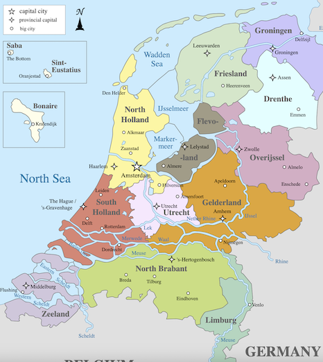
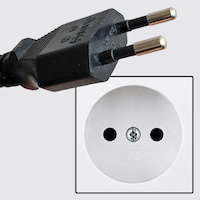
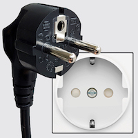
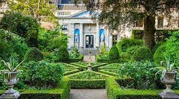
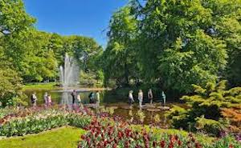
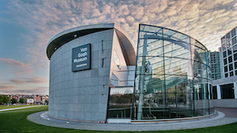
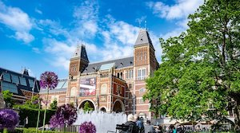

In 2026, we are going on a short trip to the Netherlands to see the sights of Amsterdam and to day-trip to Keukenhof to see the tulips. This eBook is a guide to help us prepare for the trip.
As for previous eBooks, this eBook is divided into 3 main sections, namely:
If I think of any other stuff I'll put it into appendices at the end. So, without further ado, let's crack on!
Well, before we start our trip, there are a few things to think about and do. I have split these up as follows:
I have also included as an Appendix what I envisage packing for the trip (excluding clothing - I am sure you can make up your own minds about clothing!).
We are visiting the Netherlands in mid to late April so we can catch the 'tulip season' – a very popular tourist time of year for foreign tourists and for the Dutch themselves.
The weather in the Netherlands for the time of our trip is very similar to UK weather – quite cool with some rainfall, best sums it up. So, not hot and occasional nights when overnight temperatures are cold. Take decent overnight gear and a light waterproof for showers is my best advice. Layers will be the order of the day.
Spring in the Netherlands coincides with what most of us think of as spring, spanning March through May. Temperatures are warm across most of the country, but it isn't yet too hot or too humid.
What to Pack: During spring in the Netherlands, temperatures are still cold. You'll want to dress in layers, as well as carry a light jacket and scarf. In early spring, a heavier coat will still be necessary for some parts of the country.
Amsterdam has a very similar climate to the UK, with mild summers and cool winters. In April, you can expect average high temperatures around 12-15°C (54-59°F) and average lows around 3-6°C (37-43°F). Rain is also common in April, so it's advisable to bring a waterproof jacket or umbrella.
The Netherlands is a country of approx. 18.45 million people and nearly 41,850 square kilometres in size. It is a very flat country with about one-third of the country lies below sea level, with extensive polders, dikes, and coastal dunes.. The Netherlands is famous for its canals, tulip fields, windmills and cycling routes. The capital city is Amsterdam, which is known for its artistic heritage, elaborate canal system and narrow houses with gabled facades. Other major cities include Rotterdam, The Hague and Utrecht.

Our holiday will be almost exclusively centred on Amsterdam.
Do check with your GP about what innoculations they advise for your personal circumstances for this trip. They will normally check for whether you are up to date with vaccines for cholera, typhoid, Hepatitis A and Tetanus.
Make sure and get them to bring your vaccination record card up to date and store it somewhere safe.
Hampton GP surgery also gave me two web sites to check:
From those web sites for the Netherlands: travellers should be up to date with routine vaccination courses and boosters as recommended in the UK. These vaccinations include for example measles-mumps-rubella (MMR) vaccine and diphtheria-tetanus-polio vaccine. There are no specific health risks in the Netherlands, and no special precautions are needed for travellers. There is no risk of malaria or other mosquito-borne diseases in the Netherlands. The Netherlands has a good standard of healthcare, and there are no specific health risks for travellers. However, it is always advisable to have travel insurance that covers medical expenses when travelling abroad.
The Netherlands is in a different time zone to the UK - they are 1 hour in front of us.
Your passport should be valid for the proposed duration of your stay. No additional period of validity beyond this is required. There should be at least 2 completely blank pages left in your passport as well.
| Air Journey | Distance (miles) |
|---|---|
|
Birmingham to Amsterdam 9th April Flight KLM 1042 from Birmingham to Amsterdam Depart: 0920, Arrive: 1130 |
276 |
|
Amsterdam to Birmingham 14th April Flight KLM 1047 from Amsterdam to Birmingham Depart: 1635, Arrive: 1650 |
276 |
| TOTAL air miles | 276 |
From the airport we will take the Sprinter to Amsterdam Centraal and then walk to Centraal Station to pick up the number 14 bus to the Artis/Holocaust Museum and the hotel is a two–minute walk from there.
The Netherlands has the Euro (€) as its unit of currency.
The Netherlands is pretty high-tech, so we may only need to take a small amount of Euros in cash. As with any holiday abroad, you are recommended to let your bank know that you will be using your card(s) in the Netherlands before you leave, if that is what you intend to do.
Credit cards (and pre-paid credit cards such as FairFX) shoiuld be accepted for most things in the Netherlands e.g. train tickets, hotels incl. Apple pay.
Nothing special here except it says there is a 50ml max on perfume being brought into the Netherlands (incl. gents after shave and spray, and eau-de-toilette)
On the return to the UK, these are selected allowances:
In the Netherlands, free wifi is widely available. Access is usually provided as a wireless network or wired internet via LAN cable in hotels. In addition, many cafes, restaurants and bars offer free wifi for customers.
Check with your mobile phone contract as to any additions you may need or want to consider when going to the Netherlands - I'm not predicting having to purchase any such additions for myself.
The voltage in the Netherlands is 230 Volts, same as the UK. Socket tytpes C and F are used there so we will need to take our travel adapters.
 |
 |
| Type C Socket | Type F Socket |
So we will need travel adapters – the existing blue travel adaptors MAY be OK. – so we can have our 4-way blocks plugged in at our accommodation.
While in Amsterdam, we will be staying at the Leonardo Boutique Lancaster Hotel, Plantage Middenlaan 48, 1018 DH Amsterdam, Netherlands. We have 2 rooms covering 9, 10, 11, 12 and 13 April. The hotel offers comfortable rooms and is conveniently located near public transportation, making it easy to explore the city. It also has amenities such as a fitness center and a restaurant, providing a convenient and enjoyable stay during our trip.
Leave house at 7.00am to get to Birmingham Airport for 7:30am. Flight departs at 9:20am and arrives in Amsterdam at 11:30am (local times). Take the Sprinter to Amsterdam Centraal and then walk to Centraal Station to pick up the number 14 bus to the Artis/Holocaust Museum and the hotel is a two–minute walk from there. Check in to hotel and then free time for the rest of the day.

During the afternoon, we have tickets for the Museum Van Loon, on Keizersgracht. Museum van Loon is a 21 minute walk from the hotelSophie won't arrive till the evening and wasn't too interested in going to the museum, so we will go without her and then meet up with her in the evening, when her Eurostar gets in.
Breakfast: not yet planned in.But there are plenty of coffee shops around Overhoeksplein 51, 1031 KS Amsterdam, Netherlands where we will be getting the coach to Keukenhof, so we can get breakfast there before we get the coach.
Lunch: On the go at Keukenhof somewhere in the park. There are a number of cafes and restaurants in the park, so we can choose from those when we get there.
Dinner: not yet planned in. We will probably eat in Amsterdam when we get back from Keukenhof, but we can decide on the day where to eat.
We will travel to Keukenhof by coach. To get the coach, we have to travel to Overhoeksplein 51 and exchange our Get Your Guide voucher for the tickets.

The HopOn HopOff Holland tour to Keukenhof departs from This is Holland, Overhoeksplein 51 in Amsterdam. Please exchange your "GetYourGuide" voucher for your bus ticket and your official Keukenhof entrance ticket at the welcome desk.
To get to This is Holland, take the free ferry from platform F3 behind Central Station. The ferry shows direction “Buiksloterweg”. It is only a 3-minute ferry ride to the opposite side. When you get off the ferry, turn left. Look up and you will see a round building with the red, white and blue flag of Holland. This building is “This is Holland”. From the ferry, it’s a 3-minute walk.
We need to arrive at Overhoeksplein 51 ten minutes before our shuttle bus departure at 0945 (so 0935) and public transport will take approx. 37 mins from our hotel to get there.
At Keukenhof, we will have a few hours to explore the park and see the tulips, windmills and maybe the castle before returning to Amsterdam in the evening.
This is a free day in Amsterdam, so we can explore the city at our leisure. There are a number of potential things to do;
Breakfast: Sophie is likely to be doing the Park Run at 9am. We can then meet up with her somewhere for brunch after that. There are plenty of cafes around the city centre, so we can choose from those when we get there.
Lunch: On the go, depending on what we decide to do.
Dinner: not yet planned in. We will probably eat in Amsterdam , but we can decide on the day where to eat.
I am not personally interested in going into Anne Frank's house but there are some recommended local cafes that overlook the house and are worth a visit, namely Cafe Winkel 43 (famous for its apple pie) and Cafe de Prins. Also, Google recommends:
This is our museum day in Amsterdam. We have two bookings:


Breakfast: not yet planned in.
Lunch: In cafe at the Rijksmuseum (see below)?.
Dinner: not yet planned in. We will probably eat in Amsterdam , but we can decide on the day where to eat.
In between those two bookings, potentially we can have lunch at the Rijksmuseum cafe, which is a very nice cafe with a good menu and a great location in the museum gardens. We can also have a look around the museum shop, which has some nice souvenirs and gifts.
There are a number of other things that we could do during our trip to Amsterdam, but I have not yet made any firm plans for these. These include:
Our return flight from Amsterdam departs at 16:35 and arrives at 16:50 (local times). Em returns with us to Hampton and Sophie returns to London on the Eurostar. We will get a taxi from our hotel to the airport, which should take about 30 minutes. We will need to leave the hotel by 2:30pm to get to the airport in time for our flight.
For what it's worth, my personal holiday essentials list is included below. Adapt for your own needs, of course!
N.B. Blood group added in pre Japan trip
| Name on Passport | Passport No. | Expiry Date | Blood Group |
|---|---|---|---|
| John Brinley Cable | 159455258 | 14 January 2036 | AB+ |
| Lesley Anne Cable | 556517863 | 18 February 2029 | O+ |
| Sophie Vinetta Cable | 575491003 | 11 January 2030 | A+ |
| Emily Beatrice Cable | 154332742 | 16 April 2035 | B+ |
Don't forget to weigh case – safe maximum is 20KG. Camera (in backpack) is hand luggage
Note for neighbours
N.B.
* optional – depends on the holiday
** may purchase in Duty Free at airport
*? may be packed with family toiletry bag
For an authentic hot chocolate experience in Amsterdam, Chocolaterie Pompadour and Chocolátl are widely considered the gold standards for quality and atmosphere. Both offer rich, decadent hot chocolate in a charming setting that captures the essence of Amsterdam's café culture. If you're looking for the current "viral" trend, MOCA is the go-to spot for its signature toasted marshmallow rim.
Whether you prefer the classic or the trendy, these three cafes are must–visit destinations for hot chocolate lovers in Amsterdam.
Others